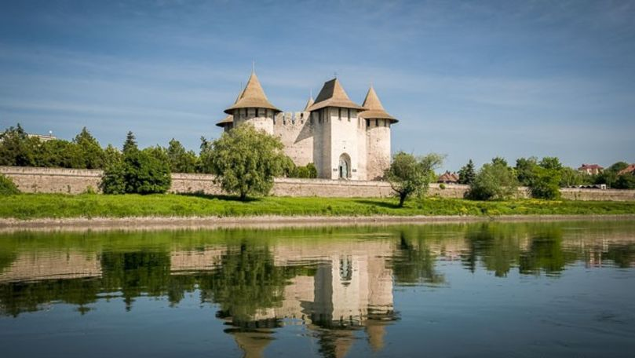
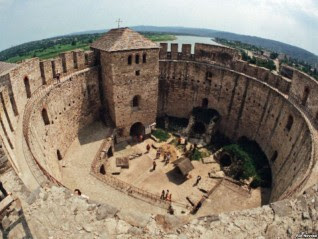

CETATEA SOROCA
Cetatea Soroca este o cetate moldovenească din secolul al XV-lea,
clădită din lemn de Ștefan cel Mare, în fața vadului peste Nistru,
și reconstruită în piatră de către Petru Rareș, la mijlocul secolului al XVI-lea.

Izvoarele istorice menționează ridicarea unor cetăți pe Nistru la vaduri,
din lemn sau din piatră, în scaunul cărora se așază pârcălabi
(vechi cuvânt românesc provenind din germana „burgmeister”) și mari căpitani:
Hotin, Soroca, Orhei, Tighina și Cetatea Albă. Se presupune că la Soroca, pe locul
unei vechi escale menționată de sursele genoveze, Alciona („albastră” în grecește)
sau Polihromia („colorată” în grecește – numele sunt bizantine) a fost înălțată întîi

o cetate din lemn și pământ, o palancă sau poate o posadă în primul sfert al secolului
XV, dar cu o primă mențiune documentară sub numele de Soroca doar la 12 iulie 1499 odată
cu primul său pârcălab Coste.

În timpul domniei lui Petru Rareș, pe resturile vechii cetăți se construiește o cetate
nouă, din piatră, de 15-20 m. care se păstrează și astăzi într-o stare excepțională.
Cetatea Sorocăi este unică printre cetățile medievale moldovenești prin sistemul
arhitectonic de construcție. Planul său circular are un diametru de 37,5 m., patru
turnuri circulare și un turn de acces de plan rectangular.
După ridicarea puternicei fortificații, orașul Soroca începe să crească în importanță
având o funcție administrativă și comercială prin punctul vamal instalat aici.